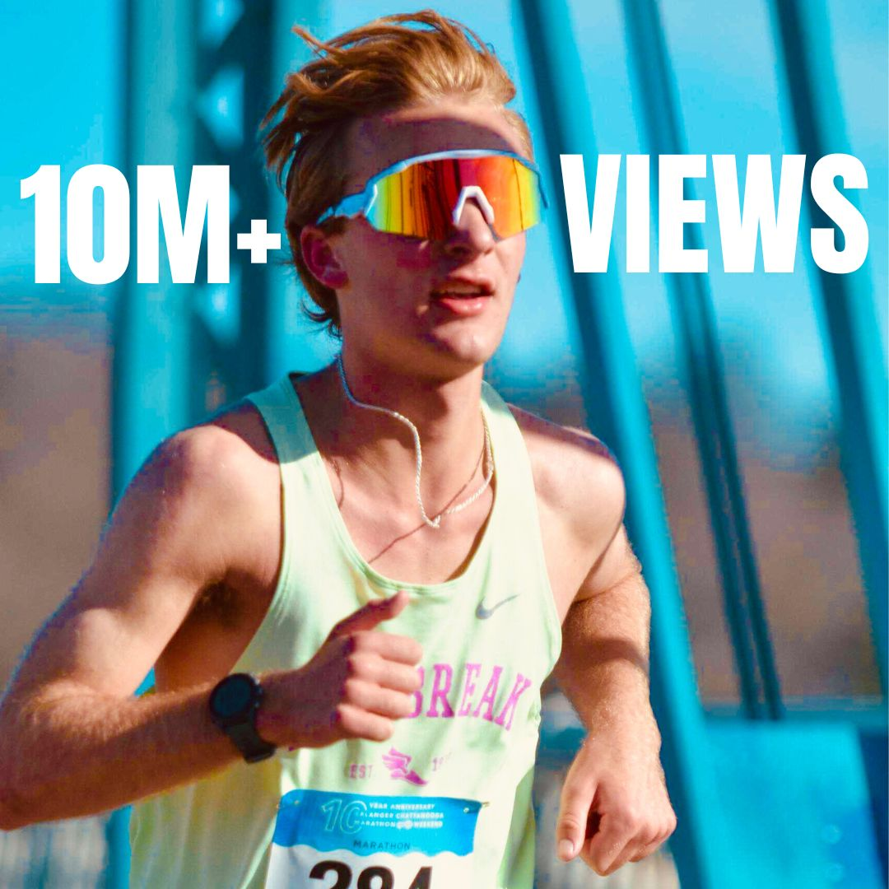
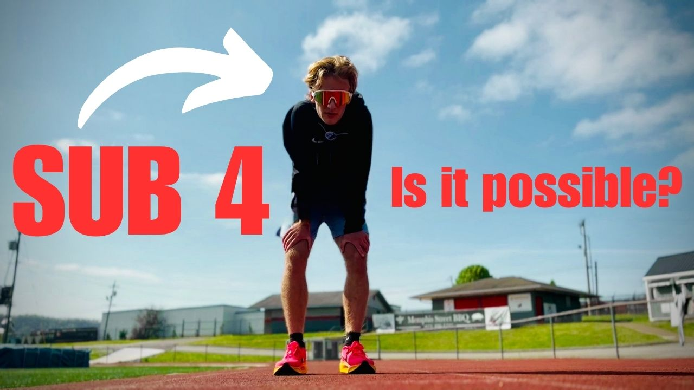
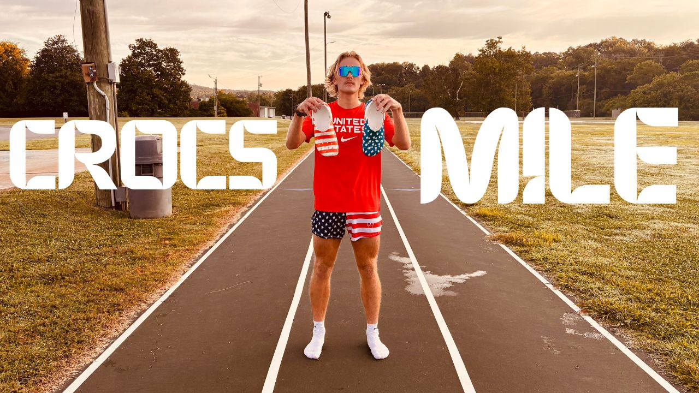

I am an elite distance runner, freelance video editor, and serial entrepreneur based in Chattanooga, Tennessee.
Whether I'm running 80-mile weeks to achieve professional athletic status, producing high-impact content for digital platforms, or scaling e-commerce ventures like Chattown Traders and Void Automation, I bring relentless drive to everything I do.
I also host The RunnerBois Podcast, sitting down with top names in the running world to share insights, stories, and strategies for success.


